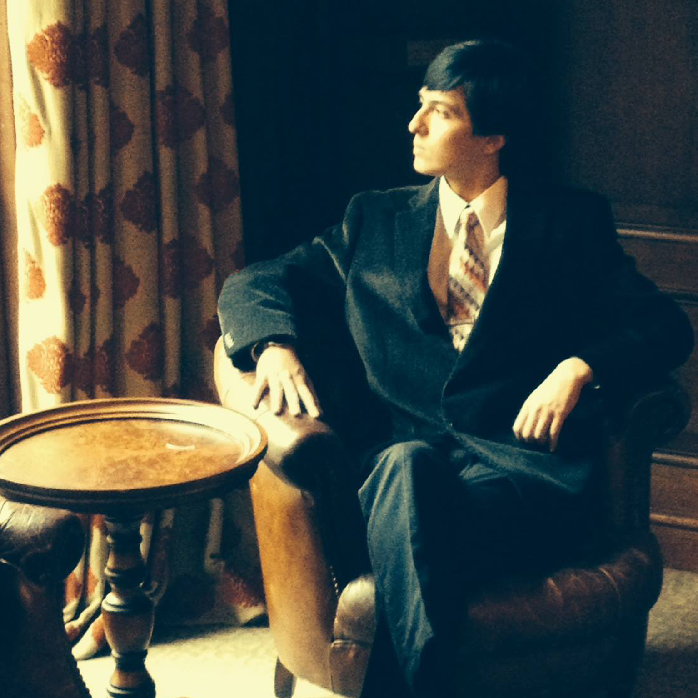

DAVIS WERTHEIMER |
|
|

Gates Hall 345
Cornell University dww78-at cornell-dot edu |
I am a Ph.D. student at Cornell University, Ithaca campus. My research is in Machine Learning and Computer Vision, with a focus on few-shot visual understanding. Since high-quality training data for a given task may not always be readily available in the wild, I believe it is important to understand how neural models generalize and adapt to new domains from partially relevant data or indirect supervision. Bharath Hariharan is my advisor. |
Publications |
|
Education
|
|
MiscNon-academic interests include fractal art, 3d printing jewelry, cooking, origami, and producing original varieties of home-made bread and ice cream. |
|
| | |
"Begin at the beginning, and go on till you come to the end: then stop."-Lewis Carroll |
|